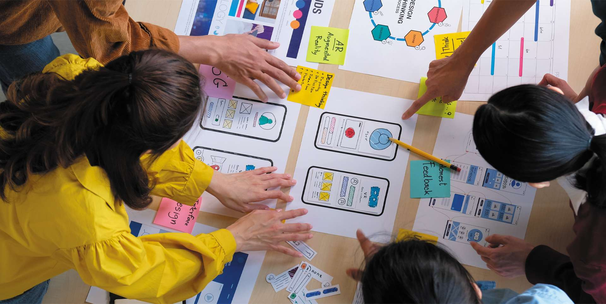

UX Junior Trainee
UX
Training
Internship
Who we need:
- An enthusiastic and driven individual eager to launch their UX career through structured training
- Someone passionate about user-centered design and improving digital experiences
- A quick learner comfortable with design tools like Figma, Adobe XD, or Sketch
- A dedicated team player committed to professional growth and ready to transition to a full UX Designer role after 1 year
Overview:
The UX Junior Trainee program is your launchpad into the design world. You'll spend 12 months working alongside experienced designers, learning research, wireframing, prototyping, and design systems from the ground up. After a year of solid work and demonstrated growth, you'll progress into a full-time UX Designer position with expanded responsibilities.
This is a structured program for someone genuinely passionate about UX who's ready to invest in building a strong foundation and launching their career.
Technical Skills:
- Proficiency or willingness to quickly learn Figma, Adobe XD, or similar design tools
- Understanding of user research methodologies and user-centered design principles
- Ability to create wireframes, prototypes, and design mockups
- Knowledge of or eagerness to learn responsive design and accessibility standards
- Strong communication and presentation skills for collaborating with cross-functional teams
Qualifications:
- Completed relevant studies in UX/UI design, graphic design, or related field (or equivalent self-taught experience)
- A strong portfolio or case studies demonstrating design thinking and problem-solving
- Genuine passion for user experience and creating intuitive digital products
- Commitment to professional development and readiness to grow into a full UX Designer role within 1 year